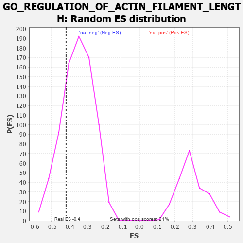

| | | Dataset | 7d |
| Phenotype | NoPhenotypeAvailable |
| Upregulated in class | na_neg |
| GeneSet | GO_REGULATION_OF_ACTIN_FILAMENT_LENGTH |
| Enrichment Score (ES) | -0.41725245 |
| Normalized Enrichment Score (NES) | -1.1874313 |
| Nominal p-value | 0.23164557 |
| FDR q-value | 0.6474934 |
| FWER p-Value | 1.0 |
Table: GSEA Results Summary
 Fig 1: Enrichment plot: GO_REGULATION_OF_ACTIN_FILAMENT_LENGTH
Fig 1: Enrichment plot: GO_REGULATION_OF_ACTIN_FILAMENT_LENGTH
Profile of the Running ES Score & Positions of GeneSet Members on the Rank Ordered List
| PROBE | GENE SYMBOL | GENE_TITLE | RANK IN GENE LIST | RANK METRIC SCORE | RUNNING ES | CORE ENRICHMENT | | 1 | NCK2 | | | 1131 | 0.458 | -0.1081 | No |
| 2 | PAK3 | | | 1889 | 0.322 | -0.1793 | No |
| 3 | WASF1 | | | 2303 | 0.259 | -0.2118 | No |
| 4 | SLIT2 | | | 2724 | 0.195 | -0.2500 | No |
| 5 | FER | | | 2803 | 0.183 | -0.2461 | No |
| 6 | BRK1 | | | 2805 | 0.183 | -0.2325 | No |
| 7 | TWF1 | | | 3199 | 0.123 | -0.2728 | No |
| 8 | FMN1 | | | 3363 | 0.095 | -0.2862 | No |
| 9 | GMFB | | | 3381 | 0.091 | -0.2814 | No |
| 10 | MTOR | | | 4114 | -0.025 | -0.3718 | No |
| 11 | ARPC2 | | | 4232 | -0.047 | -0.3830 | No |
| 12 | BAG4 | | | 4314 | -0.061 | -0.3886 | No |
| 13 | EPS8 | | | 4474 | -0.088 | -0.4020 | No |
| 14 | ABI2 | | | 4554 | -0.106 | -0.4039 | No |
| 15 | ARPC3 | | | 4659 | -0.129 | -0.4073 | Yes |
| 16 | ARF6 | | | 4704 | -0.140 | -0.4023 | Yes |
| 17 | WASF3 | | | 4730 | -0.145 | -0.3946 | Yes |
| 18 | FLII | | | 4795 | -0.156 | -0.3909 | Yes |
| 19 | WDR1 | | | 4824 | -0.163 | -0.3822 | Yes |
| 20 | DLG1 | | | 4860 | -0.169 | -0.3738 | Yes |
| 21 | CAPZB | | | 4908 | -0.179 | -0.3663 | Yes |
| 22 | SSH1 | | | 5254 | -0.258 | -0.3903 | Yes |
| 23 | PICK1 | | | 5265 | -0.263 | -0.3718 | Yes |
| 24 | LATS1 | | | 5412 | -0.298 | -0.3677 | Yes |
| 25 | BBS4 | | | 5806 | -0.407 | -0.3866 | Yes |
| 26 | ARPC4 | | | 5886 | -0.430 | -0.3641 | Yes |
| 27 | ACTN2 | | | 5960 | -0.458 | -0.3388 | Yes |
| 28 | JMY | | | 6023 | -0.479 | -0.3106 | Yes |
| 29 | ADD2 | | | 6046 | -0.487 | -0.2767 | Yes |
| 30 | EVL | | | 6052 | -0.490 | -0.2404 | Yes |
| 31 | DBNL | | | 6084 | -0.501 | -0.2066 | Yes |
| 32 | GBA2 | | | 6136 | -0.515 | -0.1743 | Yes |
| 33 | SVIL | | | 6259 | -0.558 | -0.1477 | Yes |
| 34 | KANK1 | | | 6536 | -0.678 | -0.1314 | Yes |
| 35 | ARF1 | | | 6583 | -0.701 | -0.0844 | Yes |
| 36 | FHOD3 | | | 6835 | -0.834 | -0.0532 | Yes |
| 37 | COTL1 | | | 7166 | -1.046 | -0.0161 | Yes |
| 38 | KANK3 | | | 7605 | -1.559 | 0.0461 | Yes |
Table: GSEA details [plain text format]

Fig 2: GO_REGULATION_OF_ACTIN_FILAMENT_LENGTH: Random ES distribution
Gene set null distribution of ES for GO_REGULATION_OF_ACTIN_FILAMENT_LENGTH